<h2 id="basics-">Basics:</h2>
<ul>
<li>Simple Scatter Plot <span>&#10003;</span> </li>
<li>Simple Stacked Bar Chart <span>&#10003;</span> </li>
<li>Simple Line Plot <span>&#10003;</span></li>
</ul>
<h2 id="surfaces-">Surfaces:</h2>
<ul>
<li><a class="hover-img" href="#">Heatmap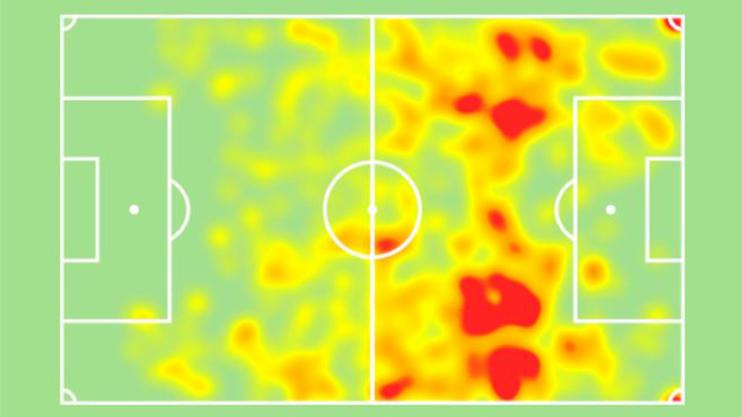</a></li>
<li><a class="hover-img" href="#">EPV Surface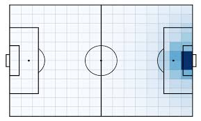</a></li>
</ul>

<h2 id="event-data-">Event data:</h2>
<ul>
<li>Pitch example (custom + mplsoccer)    </li>
<li><a class="hover-img" href="#">Convex Hulls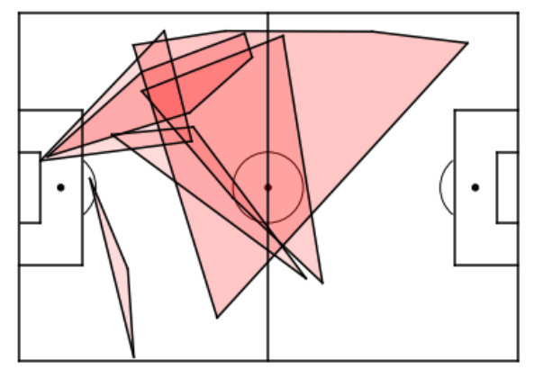</a></li>
<li><a class="hover-img" href="#">Passflow Map</a></li>
<li><a class="hover-img" href="#">Plot Events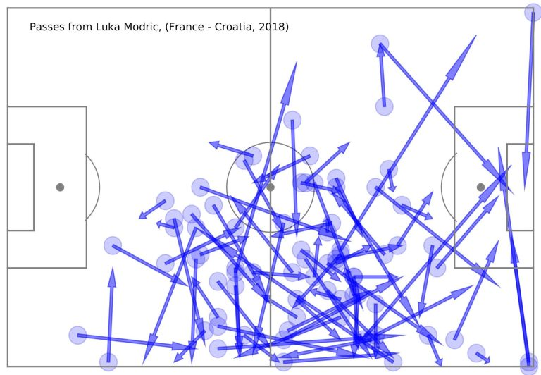</a></li>
<li><a class="hover-img" href="#">Passmaps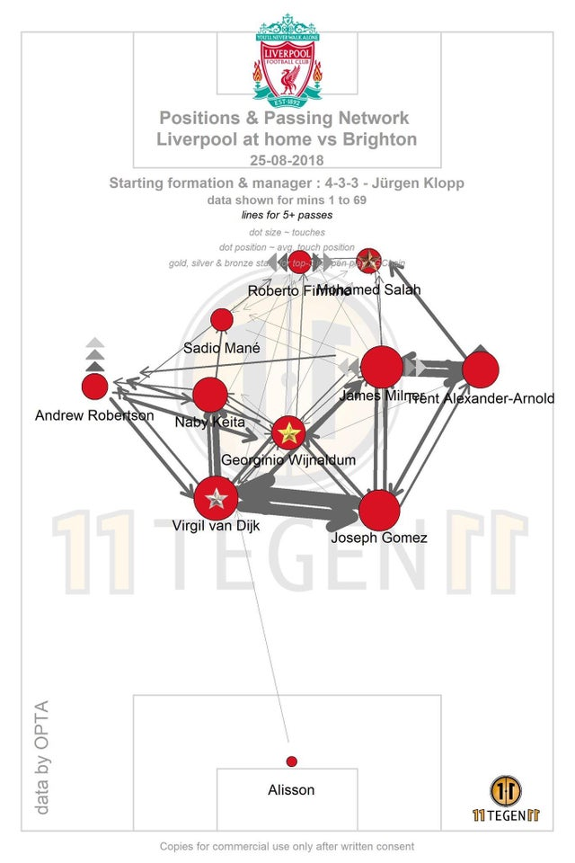</a></li>
</ul>

<h2 id="hybrid-axes-">Hybrid Axes:</h2>
<ul>
<li><a class="hover-img" href="#">Pitch on pitch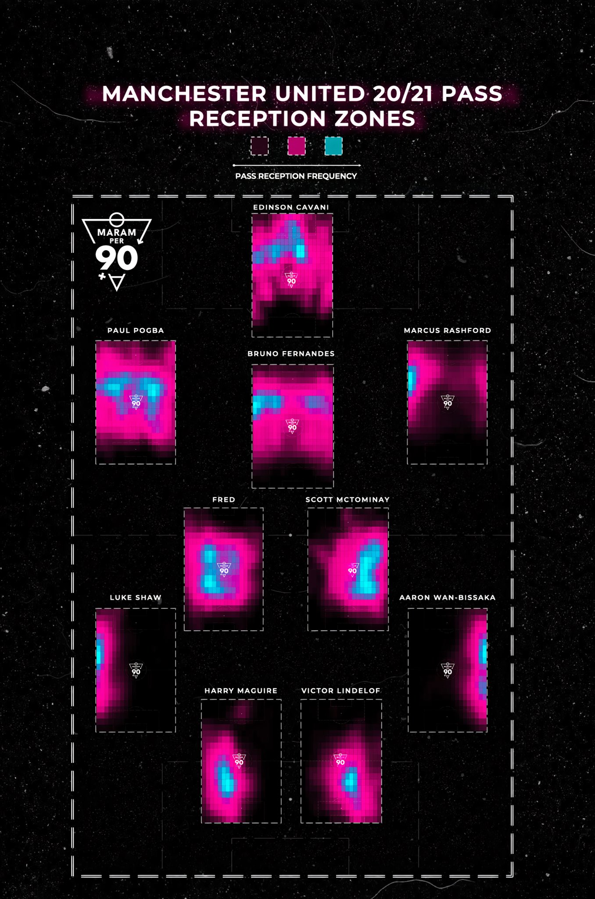</a></li>
<li><a class="hover-img" href="#">Pass Sonars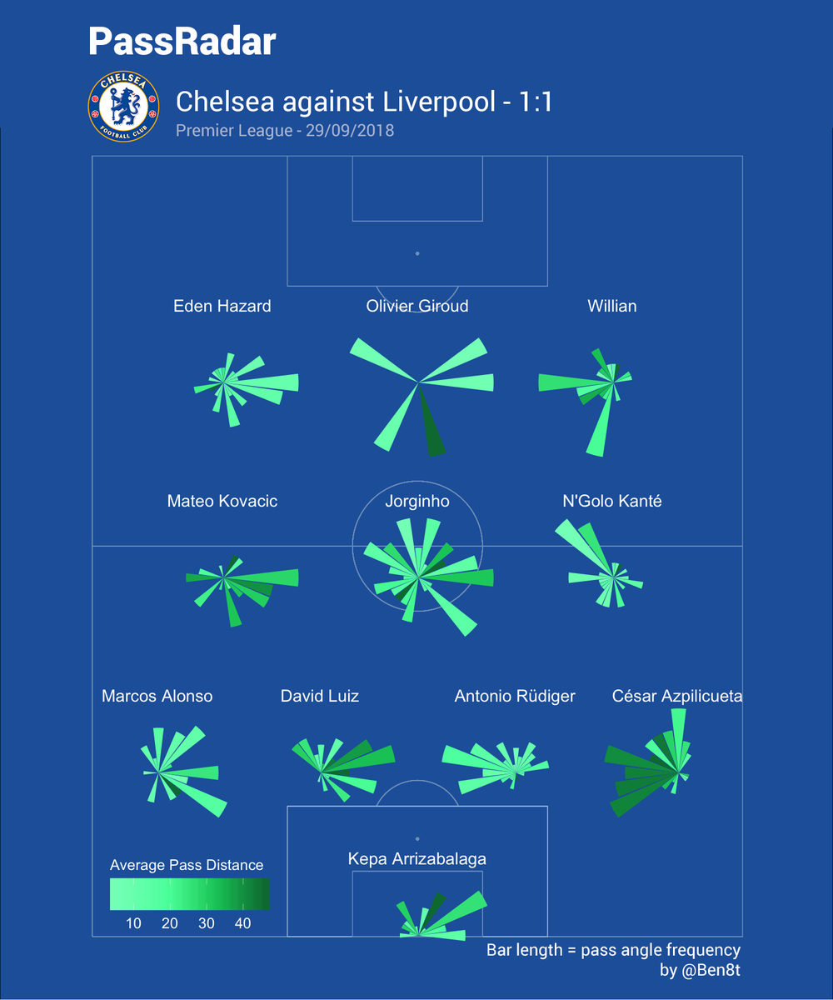</a></li>
</ul>

<h2 id="miscellaneous-workflows-">Miscellaneous Workflows:</h2>
<ul>
<li>Add background image to vizzes</li>
</ul>

<h2 id="guest-vizzes">Guest Vizzes</h2>
<ul>
<li><a class="hover-img" href="#">Polar Shot Map (Peter)</a></li>
<li><a class="hover-img" href="#">Waffle chart (Peter)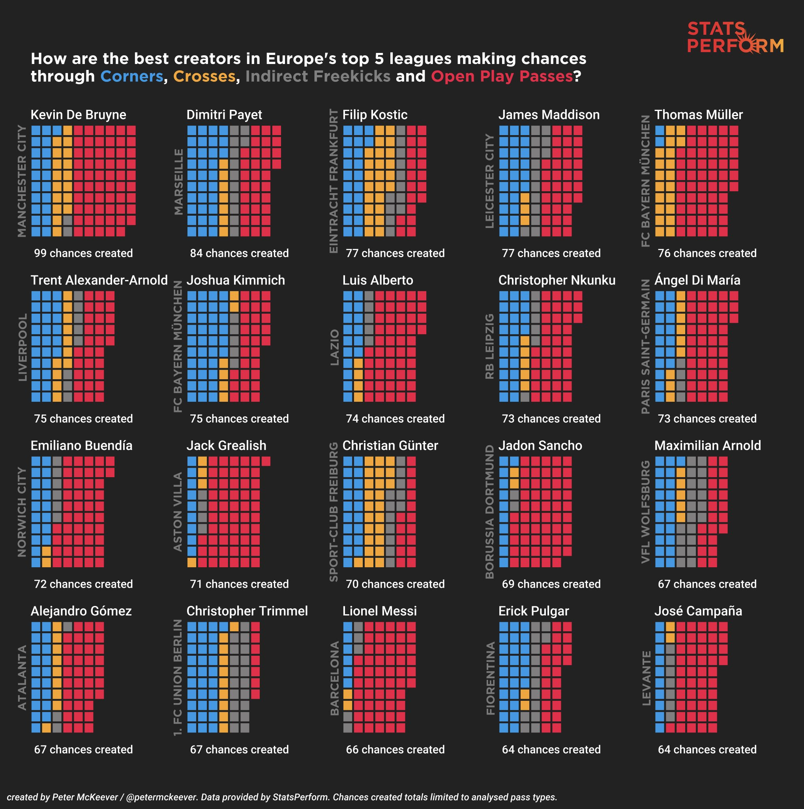</a></li>
<li><a class="hover-img" href="#">Minutes by Match Matrix (Peter)</a></li>
<li><a class="hover-img" href="#">Diamond Scatter (Peter)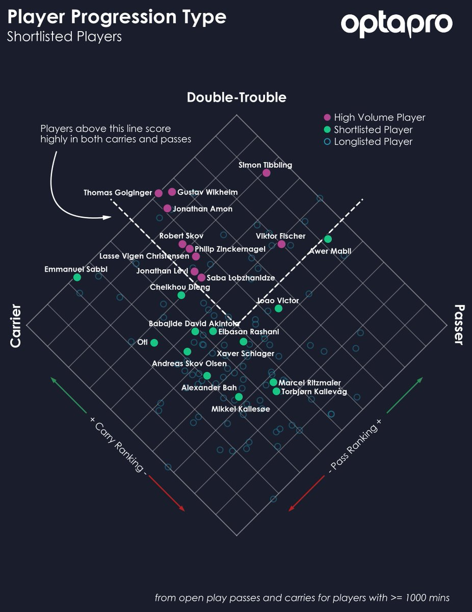</a></li>
<li><a class="hover-img" href="#">Inverted shot sonars (Jon Ollington)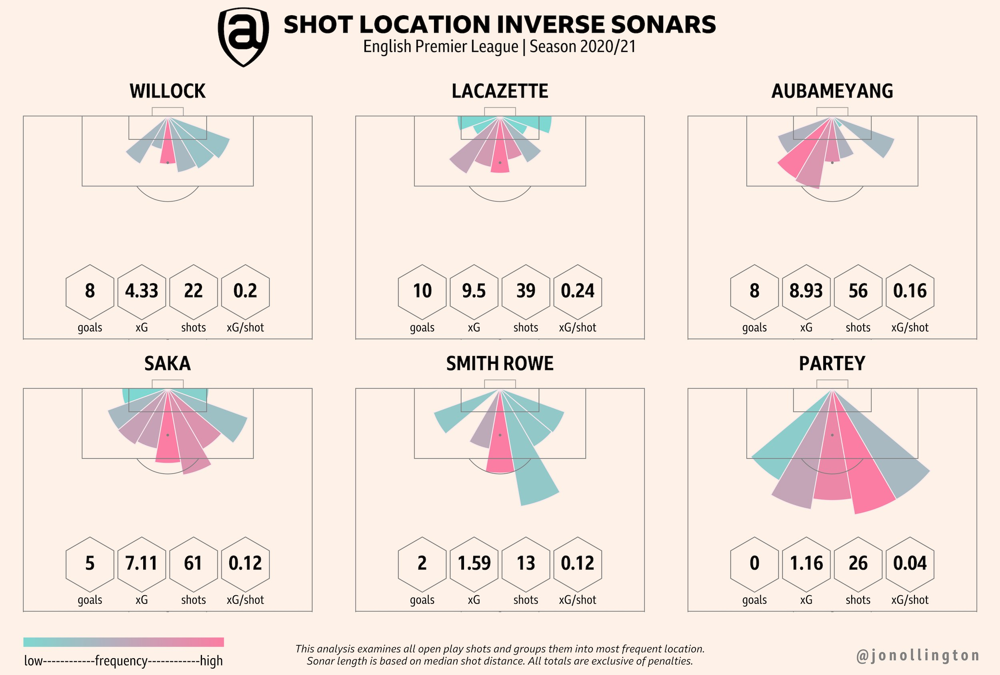</a></li>
<li><a class="hover-img" href="#">Leaf radars (Soumyajit)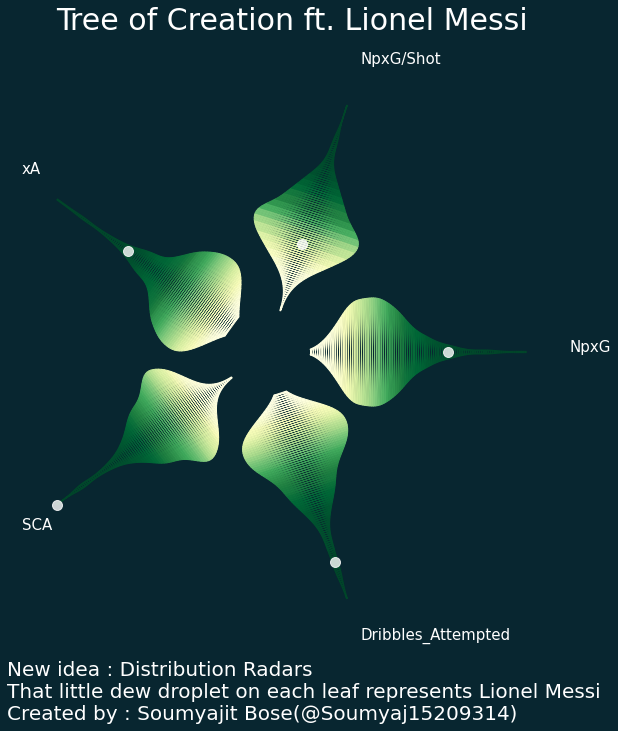</a></li>
</ul>

<h2 id="popular">Popular</h2>
<ul>
<li>Player radars (simple + customizable axes)</li>
<li><a class="hover-img" href="#">League Table Standing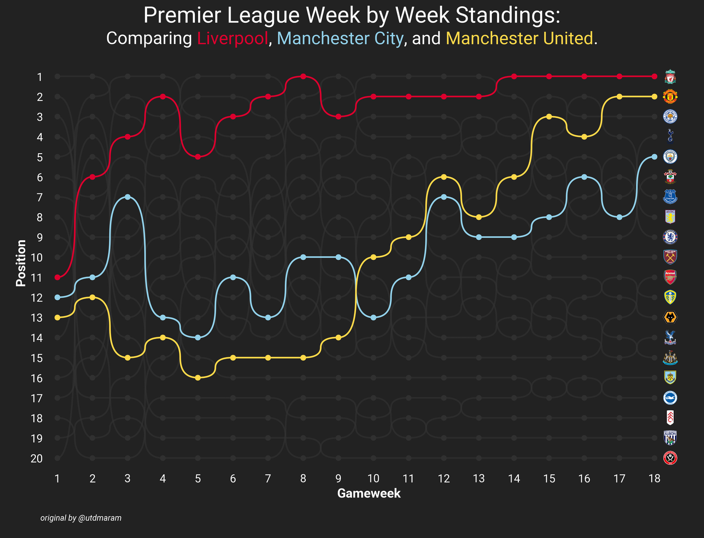</a></li>


</ul>
